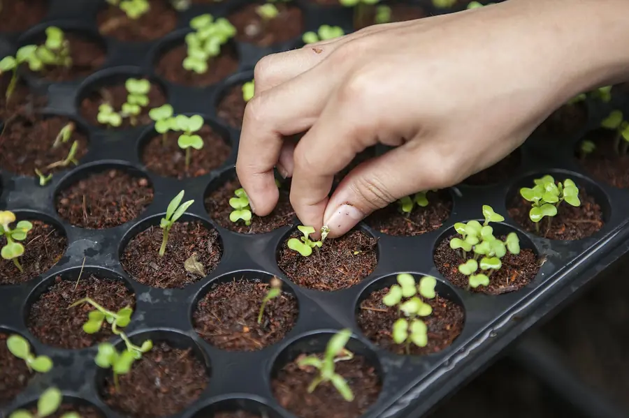
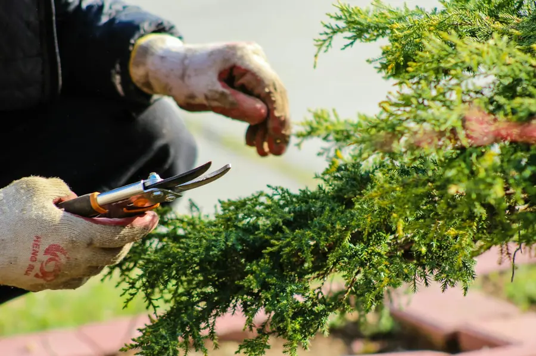
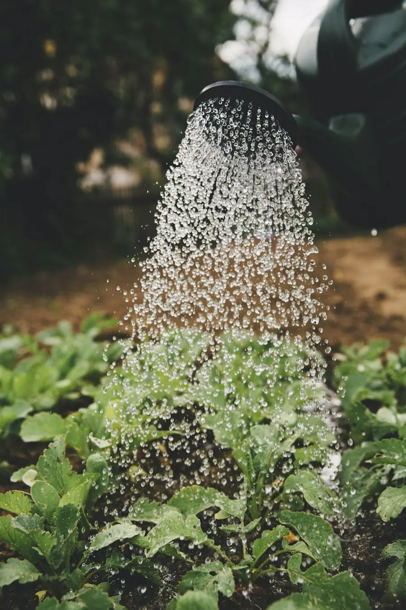
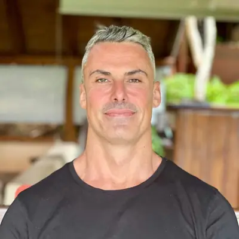

Founder alignment & strategyThe Roots
Every healthy business grows from healthy roots: you. We start with your life, your priorities and what you want the business to give you, then shape a strategy that serves it.
Explore the RootsGardeners for founders
We're gardeners at heart. We help you get clear on what you want from life, then tend your business with coaching, skilled hands and smart technology, so it grows in a way that gives back.
Why gardeners?
That's how we work with founders. We don't arrive with a template and a big invoice. We get to know you, prepare the ground, bring the right care at the right time, and stay patient while things take root.
Your values and priorities are the soil. The business grows from there.
Regular attention and straight talk, not a report that sits in a drawer.
Businesses that feed their founders, teams and communities for years.
How we help
Use one, or let them work together. Every garden we tend has a lead gardener who knows you well and brings in what's needed, when it's needed.

Founder alignment & strategyEvery healthy business grows from healthy roots: you. We start with your life, your priorities and what you want the business to give you, then shape a strategy that serves it.
Explore the Roots
Flexible delivery teamsSkilled hands when you need them. Strategists, designers, developers and marketers from our network, led by your lead gardener, so you don't have to hire or juggle contractors.
Meet the Garden Team
AI commercialization engineA warm, measured place for growth. AI tools keep your marketing channels watered and measured; our people watch over them and prune what isn't working.
Step into the GreenhouseWhat it feels like
Founders carry a lot, and often have few people to talk to openly. We've run businesses ourselves, so we know the pressure of being expected to have every answer.
You can talk to us about your life as openly as your business. Warm, personal and down-to-earth, always.
Your lead gardener
Joshua or Steve will walk with you from the first conversation. They help you decide what to grow first, bring in the right people and tools, and keep an eye on how everything is doing. Help grows or shrinks with the season you're in.
Meet the gardeners
Steve LewinPartner & lead gardenerHow we tend a business
As your business grows, we come back round: listen again, plant what's next, tend it, and see what's thriving.
We get to know you, your business, the ground it's growing in and what you want it to become.
Together we choose what to grow first and why, and what it will take.
Your lead gardener brings in the right people, tools and routines, and does the work alongside you.
We look at what's thriving, prune what isn't, and plan the next season.
Client voices
A few words from people whose work we've helped grow.
Revive Global Ventures helped bring clarity and structure to years of work and research. Their ability to translate complex ideas into a cohesive strategy has been invaluable.
They absolutely overdelivered. The speed, insights and strategy saved me so much time and money, and gave me information I would not have been able to access on my own.
They brought structure and clarity to my work in a way that made it far more accessible and actionable, and positioned it for real-world impact.
Our work
The gardeners
With roots in India, Thailand, Nepal and the US. Meet the team
Founders and owners of small and mid-sized businesses, from people planting something new to leaders of established companies who want their business to work better for them.
Because good growth can't be forced. A gardener prepares the soil, gives the right care at the right time, prunes what's draining energy and stays patient. That's how we work with founders: starting with you, then tending the business so it grows in a healthy way.
Yes. The Roots, the Garden Team and the Greenhouse each work on their own. If you need broader help, your lead gardener brings them together.
With a conversation. We listen first, then suggest what to plant and what it will take. You can work with us on a single project, ongoing support in one area, or across several.
We work through a distributed network of experienced professionals, with much of our team based in Asia. You get specialist skills at a much lower cost, guided by a senior lead gardener.
Yes. Our team has built and run businesses in India and Thailand, advised companies in the US, and brings deep sourcing experience across China and Southeast Asia.
Let's talk
Tell us about you and what you're growing. We'll listen, ask good questions and suggest where to begin. No pressure, no jargon.
Let's talk